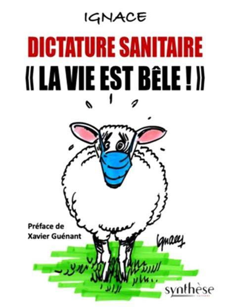

Dictature ? Totalitarisme ? Les opposants à l’obligation vaccinale déguisée en interdictions, discriminations et sanctions soumises à la possession d’un passeport sanitaire ont souvent affaibli leur position par l’emploi de termes excessifs aux yeux de la majorité des médias et donc de l’opinion publique. Toutefois la mobilisation contre les mesures jugées liberticides semble s’amplifier et se durcir. La raison ne s’en trouve pas dans l’irresponsabilité et l’ignorance des réfractaires, mais bien dans la dérive d’un pouvoir qui n’est peut-être ni une dictature, ni encore moins un totalitarisme, mais qui connaît une dérive de la démocratie vers de tels régimes. La conjonction du quinquennat et de l’élection d’un personnage atypique a permis la dérive dictatoriale. L’élection des députés dans la foulée de celle du président a anéanti ce qui restait de la séparation entre les pouvoirs exécutif et législatif. Néanmoins, jusqu’en 2017, les députés avaient encore une existence propre. Souvent élus et réélus dans leurs fiefs où ils détenaient un mandat local, ils étaient pour beaucoup issus du même parti que le Président dont ils étaient les pairs plutôt que les commis.
En 2017, à la suite d’un coup d’État médiatico-judiciaire, c’est un nouveau-venu qui a remporté l’Élysée et qui a été doté par une majorité relative de Français d’une majorité au Palais-Bourbon de députés appartenant au parti qu’il venait de créer. Ces hommes et ses femmes, socialistes assurant leur survie, opportunistes de “droite” sauvant leur carrière, et miraculés de la société civile, lui doivent tout. Rares seront ceux qui auront conscience de leur bévue : le plus souvent ils appartiendront à la troisième catégorie, et seront venus au macronisme avec la foi des convertis, sans souci de leur ancrage “professionnel” dans la politique. Déçus, trahis, ils le clament et sont exclus.
L’Assemblée est devenue une caisse enregistreuse. Lorsque le compte n’y est pas, faute de présence et qu’un amendement passe contre l’avis du gouvernement, on vote à nouveau et le garde-à-vous est rétabli. Le président de l’Assemblée, socialiste, mis en examen, veille à la discipline des troupes et à son propre avenir. Le Sénat sauve l’honneur, mais tout le reste et perdu, puisqu’en dernier ressort, c’est l’Assemblée et son montreur de marionnettes à l’Élysée qui décident ! La personnalité particulière de ce dernier accentue le phénomène : parvenu trop vite au pouvoir, sans expérience, notamment celle des échecs indispensables pour mûrir, Narcisse, roi, ne peut cacher son mépris pour les autres, et ne réagit qu’en niant ses fautes, en noyant la contestation sous ses discours et enfin en faisant donner la garde. L’épisode des Gilets Jaune, faute de concertation et d’empathie, s’est épuisé dans une dérive extrémiste et violente sans doute organisée et a été submergé par le déluge verbal présidentiel des prétendus grands débats.
L’épisode du covid a vérifié le diagnostic. Une série de fautes a été niée avec entêtement : la disparition des masques, le manque de lits de réanimation, l’interdiction des traitements, la mise entre parenthèses des médecins libéraux, l’insuffisance des tests, la confusion de la stratégie vaccinale, la lourdeur excessive des confinements et couvre-feux, le tout ponctué par des interventions présidentielles chargées de donner le “la” à l’orchestre gouvernemental et au chœur des Français. La pandémie avait touché un quart des Français au mois d’avril dernier. 110 000 en sont morts.
L’écart des deux chiffres et le fait que les décès ont frappés essentiellement des personnes, très âgées et atteintes de comorbidités, montrent à l’évidence qu’il ne s’agit pas de la peste mais d’une maladie à laquelle l’immense majorité résiste par ses propres moyens.
De là à penser que le grossissement du danger, l’amplification et la réanimation périodique de la peur, ne sont pas tout-à-fait innocents, mais procèdent d’une volonté délibérée d’utiliser le virus à des fins politiques, il n’y a qu’un pas. Le Président a retrouvé la maîtrise des horloges : c’est lui qui décide des ouvertures et des fermetures, des libertés et des interdits, et qui le fait pour le bien de tous qu’il est seul à connaître. Le troupeau, entrevoyant au bout du tunnel covidien, les vertes prairies de l’alpage applaudit en l’occurrence plus la prairie que le berger, mais sans vraiment percevoir sous quel régime il est en train de passer.
La tendance dictatoriale est donc évidente et le fait qu’elle soit approuvée n’y change rien. En revanche, peut-on parler de totalitarisme ? Pour Hannah Arendt, la marque même de l’État totalitaire c’est de considérer qu’il y a des hommes “en trop”, “superflus”, et l’on voit bien que l’idée de sauver les plus fragiles en contraignant tous les autres est exactement le contraire. Il faudrait se référer aux amis mondialistes de M. Macron pour lui faire un procès d’intention sur ce thème, mais la politique sanitaire actuelle va à l’encontre de l’idée qu’une humanité moins nombreuse, et plus forte, « transhumanisée », est la voie de l’avenir. Toutefois, dans la gestion de la terreur virale, comme dans celle de l’angoisse climatique, il y a un élément qui, lui, devrait éveiller nos craintes : le triomphe de la pensée unique, certifiée par la science. Ceux qui nient le réchauffement climatique, ceux qui doutent du vaccin, ceux qui pensent qu’il y a d’autres solutions, ceux qui rappellent l’inviolabilité constitutionnelle des corps, ceux qui défendent la liberté contre la contrainte même apparemment bienfaisante, doivent se taire ! Le pouvoir parle le langage de la Science qui est la seule voie. Jusqu’à présent, les totalitarismes reposaient sur des idéologies qui soumettaient la science au risque de la ralentir et voici que le rêve saint-simonien d’un gouvernement de la science advient. C’est en cela que se niche le risque totalitaire : il n’y a pas de démocratie sans pluralisme. Mais rappelons aussi, avec Popper, que la science elle-même repose sur le doute et la contestation, et qu’en cela la démocratie est davantage son alliée que son ennemie.
Partager cette page